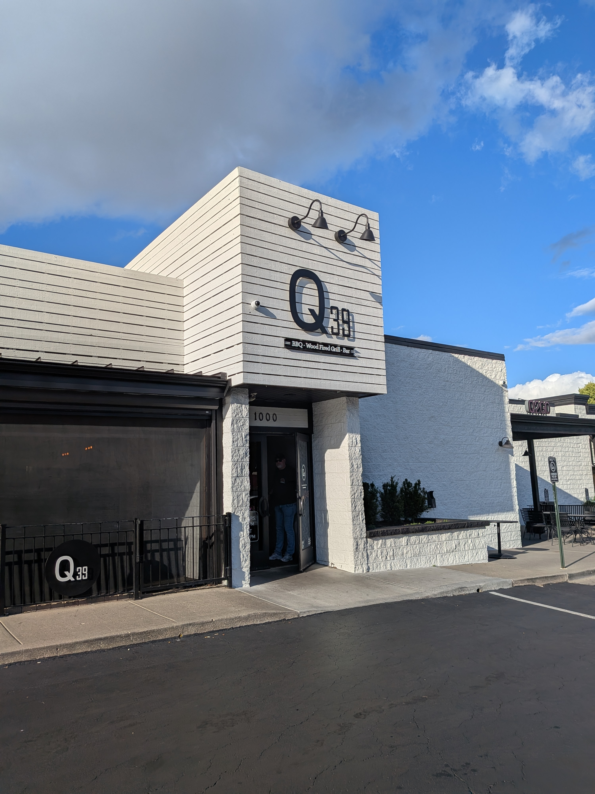
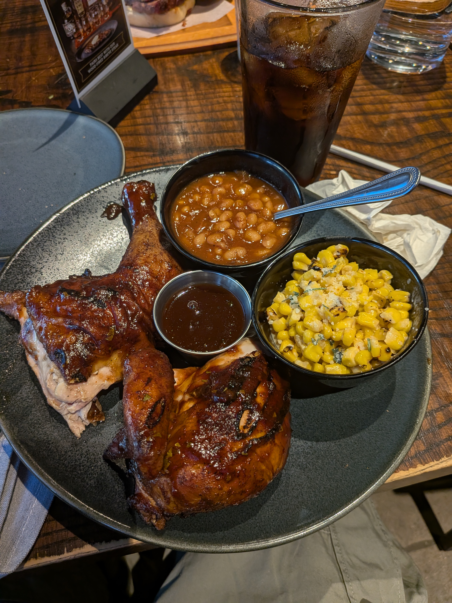
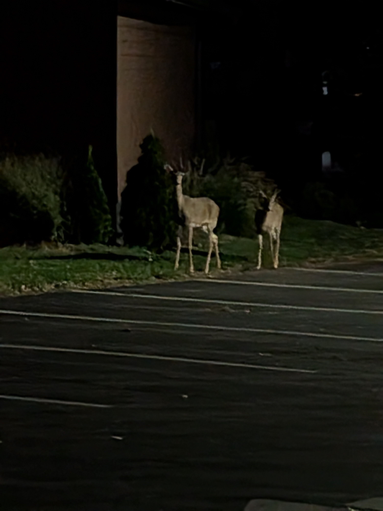
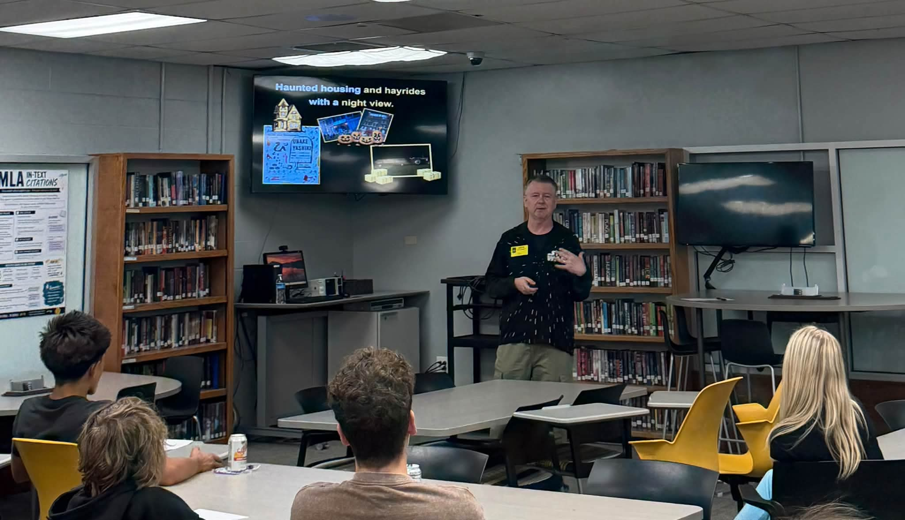
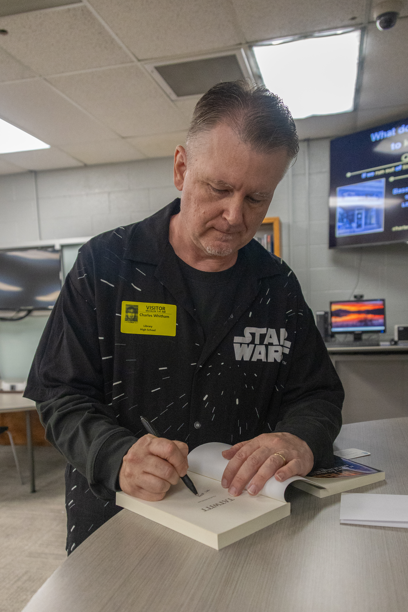
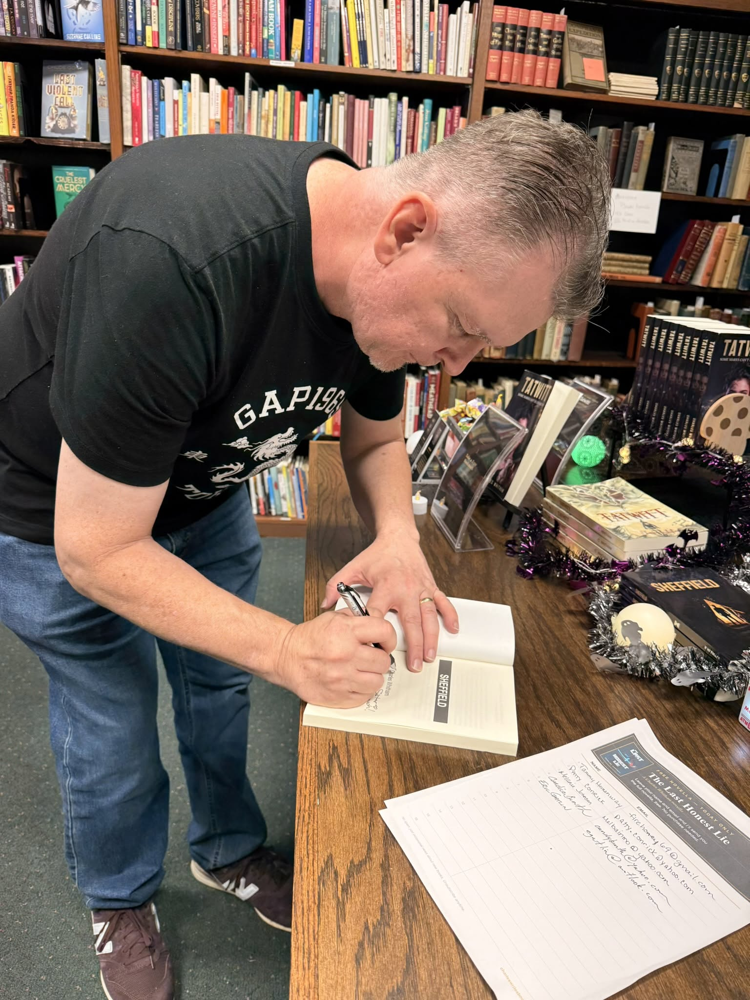
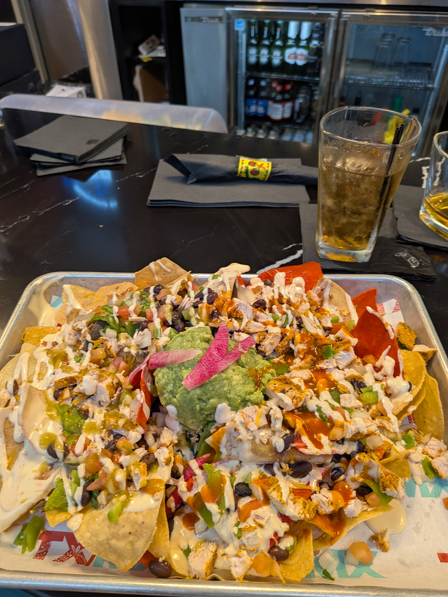

OK, let's get this part out of the way. I'm sorry this post is late. I've been jet-lagged, I went right back to work, and I've been putting things away from the trip. Needless to say, I hit the ground running.
I'll include as much detail as I can about the trip. I hope it's enough that you'll all feel like you came along with me.
I left Narita Airport at 6:30 PM on September 19th. The flight was smooth with very little turbulence. I had a layover in Dallas, and that didn't go so well. We arrived on time at 4:35 PM, still on the 19th (real-life Back to the Future stuff), but the flight to MCI in Kansas City was delayed. The gate changed six times. We finally left Dallas at 9:30 PM and landed at MCI at 11:16 PM. By the time I got my luggage and made it to the house of the friend I was staying with in Liberty, Missouri, it was after 12:10 AM on the 20th.
The 20th was the Chiefs game. One of my goals was to eat a footlong cheese coney from Sonic at least once, so I did that immediately. It was breakfast. After that I went to Arrowhead Stadium and tailgated with some new friends I'd met. I bought a bunch of stuff at the pro shop. The game was awesome, and it was my first time seeing an NFL overtime game in person. I'm not convinced the Chiefs are at Super Bowl level yet, but they look stronger than last year, and that's a relief.
I spent the next three days eating and shopping. I bought so much Chiefs gear that my room looked like Arrowhead Stadium had exploded in it. Trying to fit it all into the suitcase at the end was chaos. Here are some highlights from those three days.
On Monday the 21st, I met my two sisters and one of my brothers for lunch at LongHorn Steakhouse in Liberty, Missouri. I love seeing them and was so happy they had time to meet me. That night I had BBQ at Three Halves, also in Liberty, with a friend, his family, and one of my cousins and his wife. I had the mac and cheese. It was so delicious!
On the 22nd I went shopping at Ross, Goodwill, and Hy-Vee, and had lunch with an old friend at Jack Stack. Dinner was Q39. Let me tell you something. Q39 was the best BBQ I have ever eaten in my whole life. I am from KC. I know something about BBQ. Trust me, if you ever have the chance to eat at Q39, make it a priority.


On the 23rd I had lunch with two of my aunts at Wabash BBQ in Excelsior Springs, my hometown. After lunch, my aunts took me to visit my mother's grave. It was my first time there, because Covid restrictions kept me from coming back for the funeral. Later I shopped at Target and Walmart. That evening I met friends at Stroud's in Liberty, and afterward I visited a dear friend's house by the lake. We saw some deer and drove around the lake on a golf cart. We talked about his brother who had passed and shared our sorrow over losing him.

The next day was my speech at my old high school in Excelsior Springs. The night before, I had a small panic. I had bought some Posca pens to sign the outside of some of the books, but I forgot to pack them. They were still sitting on my desk back in Japan. I donated a copy of each novel to the school, and when I signed them, I made do with some Sharpie gel pens and signed the inside of the books instead.
I want to slow down here and relive this as best I can, because it was surreal. I arrived at the school at 8 AM. Walking in for the first time in years felt strange. The school had been completely remodeled, and a lot of it was different. It was homecoming, so the hallways were decorated for the occasion. There were six speaking sessions with roughly 130 students in total. In each one I asked how many of them couldn't wait to get out of Excelsior, and most of them raised their hands every time. That made me laugh. What surprised me was that most of the questions were about my books, not Japan. I didn't expect that.

The school treated me to pizza for lunch (thank you very much if you're reading this!), and I signed the donated copies in the last class. I was happy that Miranda Jamison from the Standard and Jason Cole from the Excelsior Citizen came to the event and covered it in their papers. Thank you both so much! There was a Sonic nearby, so I had another footlong cheese coney, just because. That night I had dinner with a few close friends at a friend's house, and we talked about music, family, and life.

The next day, the 25th, was my book signing. I was surprised to get an email from a student from the high school talk, sent through the contact form on this website. I went to Liberty, where the Fall Festival was in full swing on the square, and set up the signing table at Basement Books KC. Then I got busy selling books. It was exciting. I sold four books before the event even started. A lot of people came, including a student from the high school the day before. I brought sixty books to the signing and left with only ten. I sold fifty books! I almost cried when I realized how well it went.

The next day I said goodbye to Kansas City and headed back to Japan. My flight out of Dallas was delayed five hours, so I ate these awesome nachos. I finally got home on the evening of the 27th, exhausted.

The trip was amazing, and I miss home already.
I'll try to be on time with the next post.
The Emotion Engine is being edited now and will release on schedule in November. If you're interested in beta reading it, send me a message through the contact form on this site and choose "Beta Reader" as the subject.
Thanks so much for reading!
—Charles